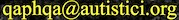

NOVITÀ: provate i nuovi coriandoli, un vero spettacolo!
NOVITÀ: nascosta tra i leoni di pietra e le crepe di questo polveroso acquedotto, c'è una latrina sacra, che, secondo l'opinione comune, conduce alla C.
Riprendiamo dall'inizio: seguendo una consuetudine comune ai racconti fantastici e agli imperi millenari, la C si era espressa per mezzo di un bambino eletto dal caso tra la folla. In quella vertigine di inversioni dichiarava che non si può essere contro se non essendo per, e che avrebbe usato la recita stessa come palcoscenico su cui rappresentare per un pubblico speculare – apparentemente passivo, inconsapevolmente interagente – una speculare, autentica falsità.
Era lampante che da quel momento ci saremmo trovati in grado di comprendere la vita vera alla luce della falsa.
Avevamo alla fine incontrato l’oggetto della nostra ricerca?
La C rispose nottetempo. Questa volta, con la sua abituale discrezione, preferì sgorbiare degli argomenti brevi sulle rovine della fabbrica di maschere.
È cominciata la festosa illusione! I sacerdoti non ne decreteranno mai l'inizio ufficiale, perché conoscono l'astuto potere della nostalgia; ma se la fiamma del gioco ti brucia, puoi scavalcare i loro intrighi e partecipare subito a un sorteggio scrivendo a 
Giochiamo, saltiamo, e pestiamo giù nella lacuna questo scoglio cencioso. Largo a Nuova Babilonia!